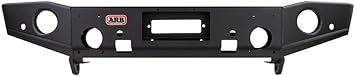
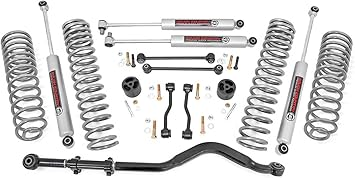
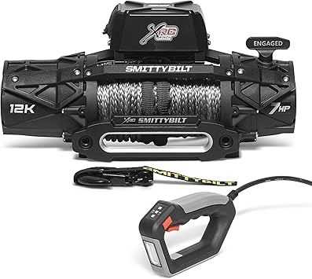

May 2026
There's a reason jeepjt is trending right now. People want quality without overpaying, and 2026 delivers solid options at every price point.

→ #5 — Front Shark Grille Compatible with 2018-2025 Jeep Wrangler JL JLU Gladiator — Great value

→ #2 — Savadicar Cowl Body Armor Outer Cowl Covers Corner Guards for 2018-2025 Jee — Consistently rated

→ #4 — Door Hinge Cover Door Hinges Trim Kit Exterior Decor Accessories 2018-2026 — Top rated

→ #1 — Front Grill Compatible with 2018-2026 Jeep Wrangler JL JLU 2020 Gladiator J — Highly reviewed

→ #3 — TPE Hood Protector Compatible with 2020 Jeep Gladiator JT 2018 Jeep Wrangle — Best seller
Overbuying features — Most people use 20% of high-end jeepjt features. Don't pay for what you'll never touch.
Panic buying on sale days — Prime Day and Black Friday jeepjt deals aren't always real discounts. Check year-round pricing.
Not measuring — "It looked bigger online" is the #1 return reason for jeepjt. Measure twice.
The jeepjt space keeps improving, and 2026 is a solid time to buy. See our full rankings at jeepjt.com for side-by-side comparisons.